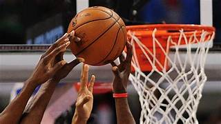
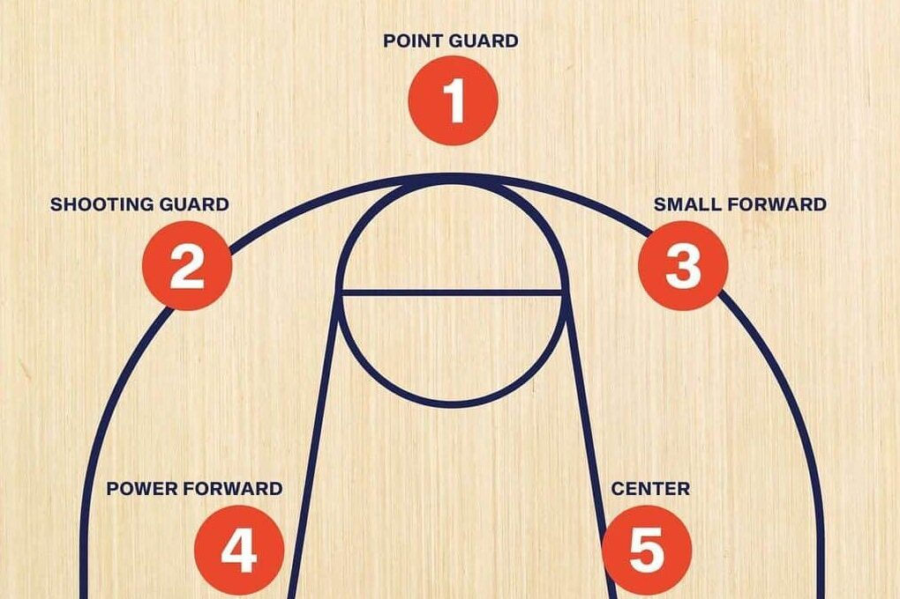

Basketball
¿Qué es el basketball?
El baloncesto, o basketball, es un deporte de equipo que se juega en una cancha rectangular. Dos equipos, generalmente de cinco jugadores cada uno, compiten para anotar puntos lanzando un balón a través de un aro elevado (canasta).
El juego se desarrolla en cuatro periodos (o dos mitades, dependiendo de la liga) y tiene reglas específicas, como no caminar con el balón sin botarlo (regla de los pasos) y no mantenerlo en posesión sin moverse (regla de los 24 segundos).

Posiciones
- Base (Point Guard - PG)
- Escolta (Shooting Guard - SG)
- Alero (Small Forward - SF)
- Ala-Pívot (Power Forward - PF)
- Pívot (Center - C)

Tipos de tiros
- Tiro en suspensión (Jump Shot)
- Bandeja (Layup)
- Mate o clavada (Dunk)
- Gancho (Hook Shot)
- Tiro libre (Free Throw)
- Tiro desde el perímetro o triple (Three-Point Shot)
- Tiro flotante (Floater)
- Tiro de media distancia (Mid-Range Shot)
- Alley-oop
- Tiro en reversa (Reverse Layup)
NBA información.
LNBP información.